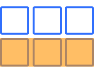

What is the CSS Grid?
A two dimensional layout system, controlling layout in rows and columns.
Grid Container
The container that holds the entire CSS grid. It is the element that has the display: grid or display: inline-grid property on it.
.grid-container {
display: grid;
}
Grid Item
Any element that is a direct child of a grid container.
.grid-container {
display: grid;
}
Grid Item 1
Grid Item 2
Grid Item 3
Grid Line
The vertical and horizontal lines that divide the grid and separate the columns and rows.

Grid Cell
A single unit of a CSS grid.

Grid Area
Rectangular space surrounded by four grid lines.
A grid area can contain any number of grid cells.

Grid Track
The space between two grid lines.
This space can be horizontal or vertical.

Grid Row
A horizontal track of a grid.
Grid Column
A vertical track of a grid.

Gutter / Gap
The space between rows and columns in a grid.

Example
.grid-container {
display: grid;
grid-template-columns:
repeat(3, 1fr);
}
Grid Item 1
Grid Item 2
Grid Item 3
grid-template-columns
&
grid-template-rows
A way to define the number of rows and columns as well as their size.
CSS length unit: fr
- What is fr ?
- What does repeat() do?
-
Example:
repeat(4, 25%)
vs.
repeat(4, 1fr)
with
grid-column-gap: 10px ?
repeat(4, 25%)
repeat(4, 1fr)
An Explicit Grid
.grid-container {
display: grid;
grid-template-columns: 1fr 2fr 1fr;
grid-template-rows: 4fr 1fr 2fr;
}
An Explicit Grid
with dynamic row and column size
.grid-container {
display: grid;
grid-template-columns: minmax(auto, 40%) 1fr 12rem;
grid-template-rows: minmax(75px, auto) minmax(75px, 150px) auto;
}
(very very very very very very long content)
An Implicit Grid
.grid-container {
display: grid;
grid-template-columns: repeat(3, 1fr);
}
(very very very very very very long content)
An Implicit Grid (Continued)
.grid-container {
display: grid;
grid-template-columns: repeat(3, 1fr);
}
(very very very very very very long content)
(open link or use next slide)
(press down to hide this)
Browser Dev Tools
- Open the DevTools (F12, Right-Click + Inspect)
- Click on "grid"
Grid Lines
Grid items are positioned using grid lines.
Positioning
.item-1 {
grid-row: 2/3;
grid-column: 2/3;
}
.item-3 {
grid-row: 3/4;
grid-column: 3/4;
}
Item 1
Item 2
Item 3
Properties
-
grid-row
- grid-row-start
- grid-row-end
-
grid-column
- grid-column-start
- grid-column-end
(open link or use next slide)
(press down to hide this)
Template Areas
What is grid-area again?
- grid-row-start
- grid-column-start
- grid-row-end
- grid-column-end
Template Areas (v2)
.container {
display: grid;
grid-template-columns: repeat(3, 1fr);
grid-template-rows: repeat(4, 1fr);
grid-template-areas:
"header header header"
"sidebar content-1 content-1"
"sidebar content-2 content-3"
"footer footer footer";
}
header
Content-1
Content-2
Content-3
Go to the code sandbox and fill up the available space with the person tiles. Think of mobile, tablet and desktop widths. Align the previously built person tiles using a CSS grid layout.
Hint: Try if you can make the layout responsive without media queries.